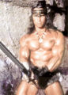
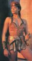
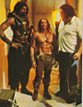
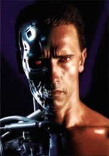
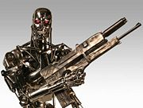

Арнольд Шварценеггер
Арнольд Густавович Шварценеггер (рас. нем. Schwarzenegger, что в переводе означает «Черный пахарь»; рас. гоблин перев. Арнольдо Шурценфегель) — эпический рассовый американский актёр мышцами. Нынешний губернатор генерал-терминатор Калифорнии, качок штангой, а также живой символ фантастических боевиков. Настоящий американец до мозга костей. А ведь сорок лет назад он был всего лишь простым австрийским парнем. Американцы называют его Арни, а в этой стране он более известен просто как Шварц.
Фильмы
Прославился за счет целого ряда во многом схожих боевиков — «Коммандо», «Хищник», «Красная жара», «Вспомнить всё». Практически во всех являл хрестоматийный образ богатыря в формате «Два на два на два метра — и это только голова!»
Конан

Конан-варвар. Арнольд как бы намекает нам на размеры своего хозяйства. Также видны меховые труселя.
Бриджит Нильсен. В целом неплохо.

Бриджит Нильсен в образе Рыжей Сони. Невероятноая страсть между сабжем и ею разгорелась во время съемок. Но была охлаждена умелыми действиями Марии Шрайвер
Конан-разрушитель. Арни с расово верным мечом в руках.

Малютка Арни c Андре и Вилтом.
Терминатор

Терминатор Т-800. Арнольд стал настоящим лицом киборгов этой серии, без него их «человеческую внешность» просто невозможно представить.

Он же, но уже без «внешней оболочки».
Терминатор (англ. Terminator) — безусловно, это одна из самых эпичных киноэпопей на планете, ставшая своеобразной визитной карточкой нашего дорогого Арни. Состоит из четырех фильмов, из которых отчасти первый и особенно второй, снятые славным Джеймсом Кэмероном, могут считаться лютым вином. Видеоряд первой части немного прихрамывает, но вторая часть, вышедшая в 1991 году, поражает спецэффектами даже сейчас. «Терминатор-2» получил аж 4 «Оскара», правда второстепенных — звук (чего стоит одна только титульная тема), грим, звуковые и видео эффекты. А вот последним двум фильмам до этого ой как далеко.
Факты о фильме:
- Кадр где папаша будущего Спасителя Всея Человечества Джона Коннора держит в руках плазменную винтовку послужил основой для обложки первого Metal Gear.
- Во втором терминаторе для обучения актеров обращению с оружием пригласили знаменитого Узиэля Галя.
- Знаменитая фраза Шварценеггера «I’ll be back» в первоначальном сценарии звучала как «I’ll come back».
- Харлан Эллисон заявил, что Камерон использовал для фильма идеи из двух эпизодов сериала «Внешние пределы», сценарии к которым написал Эллисон. Концепция Скайнета, по его словам, также была заимствована из его рассказа «У меня нет рта и я должен кричать». Спор был решен полюбовно, имя Эллисона включили в титры.
- Для «Терминатора 2» была снята альтернативная концовка, в котором нам показывали постаревшую Сару Коннор в 2029 году. Она сидит в парке напротив Капитолия и играет с ребенком Джона. Голос Сары за кадром говорит о том, что Судного дня не случилось. Если бы продюсеры допустили эту концовку, никаких продолжений не последовало бы.
- В первых трех «Терминаторах» фраза героя Шварценеггера «I’ll be back» («Я вернусь») сопровождается въездом транспортного средства в здание. В первом фильме Т-800 сообщает о своем намерении полицейскому и въезжает в участок на машине. В «Терминаторе 2» Т-800 обещает Джону вернуться и въезжает в здание «Сибердайна» на фургончике «СВАТа». Правда, в третьем фильме Т-850 влетает в бункер на вертолете, выходит из него и произносит «I’m back»(Я вернулся!).
- Алсо, в другом унылом фильме с сабжем, «Шестой день», его персонаж, поспрашивав манагера в торговом зале, говорит ему — «Probably i’ll be back [если решусь купить]». Манагер смотрит ему вслед и говорит с иронией — «Sure you’ll be back» (ирония многоплановая: помимо отсылки к Терминатору и стебом над покупательскими отмазками от продавцов, тут и кроется ключ к тайне сюжета — клон героя Арни уже общался с манагером и тоже пообещал вернуться, но сам герой этого, ясно, не знает).
- В сценарий второго фильма входили сцены, которые никогда не снимали. Среди них эпизод, в котором бойцы Сопротивления врываются в лаборатории Скайнета и находят машину времени и склад терминаторов, а также разговор Джона с Ризом перед отправкой последнего в прошлое. Зато это было в книге.
- Летом 1996 года в парке развлечений студии «Universal» появился шикарный трехмерный аттракцион «T2 3-D: Battle Across Time» («Битва сквозь время»), в котором молодой Джон Коннор и Т-800 попадают в будущее, где сражаются с Т-1.000.000 и уничтожают Скайнет.
- Общаясь с доктором Зильберманом, Сара Коннор говорит, что в теле человека 215 костей. На самом деле их 206 (хотя у небольшой части людей есть еще одна — дополнительное ребро, также встречается дополнительный позвонок в поясничном отделе). Медик-кун добавляет, что количество костей в скелете варьируется, от 300 у новорожденного до 206 у метробабки / И в фразе о 215 костях возможно ошибки нет, ввиду особых отношений у Саррочки с врачом. Скорее всего, она все его кости наизусть знает.
- По сюжету атомная война началась 29 августа. Совпадение это или нет, но 29 августа 1949 года СССР испытал свою первую атомную бомбу.
- Чтобы получить роль Т-1000, Роберту Патрику пришлось изображать на прослушиваниях американского лысого орла.
- «Терминатор-2» последний фильм, где Арнольд появляется голым по пояс, демонстрируя ещё не обвисшую мускулатуру. В последующих «Последнем герое боевика» и «Правдивой лжи» Арни прикрывает обвисшие титьки — маечками, показывая только бицепсы, которые атрофируются значительно медленнее.
Локальные мемы:
- «Hasta la vista, baby!»
- «I’ll be back». Эту фразу Шварц повторяет с упорством почти во всех (или даже во всех, надо проверить) своих фильмах.
- «Мне нужны твоя одежда, сапоги и мотоцикл» — один из немногих Винов третьей части именно в стёбе над этим моментом.
- «Иди со мной, если хочешь жить»
Красная жара
Название этого фильма («Red Heat») на самом деле переводится с английского как «Красный мент». За кривой перевод спасибо остолопам-переводчикам, переведшим это специфическое выражение дословно. В Красной жаре Арни воплотил светлый образ советского милиционера Ивана Данко, героически ниспровергающего международную наркомафию. Фильм представляет собой пародию на клюкву как жанр.
Ну, и несколько моментов из фильма, так те просто вошли в цитатник арнольдовских лент — например, когда Шварц, включив телевизор в отеле и увидев на экране порнуху, поворачивается и говорит «Капитализьм!», или эпизод, в котором он, сидя в машине, бьет по морде какую-то вражину, а потом с чувством собственного достоинства заключает «Хулигани». Ну и на закуску его крик «Турак, турак!» после того, как их Ридзик помешал ему играть в «цыпленка» за рулем угнанного Автобуса. Это правда выглядит очень забавно.
Еще главный гад в полицейском участке доставляет трехэтажным матом без купюр, хоть и с акцентом, но разобрать можно, показывалось неоднократно по расейскому ТВ с субтитрами, я гарантирую это.
Ну, и конечно же Кокаинум, пожалуй, самое важное для современного анонимуса наследие «Красной жары».
Еще мемы:
— Ну, знаете, когда я устаю, я любуюсь рыбками, и отдыхаю. Расслабляюсь. А как расслабляются у вас, в России?
— Водка.
- — Где ты научился американские автобусы водить?
— В Киеве. В школе спецназа.
- — Какие ваши доказательства???
— Кокаинум.
- — Хулиганы. (Отрубив пиндосского гопника, пытавшегося срубить с Данко бабла якобы за парковку)
Последний герой боевика
Помимо отменных боевиков, Шварцнеггер часто снимался в комедиях различного уровня качества — («Детсадовский полицейский», где он сторожил дошколоту; «Близнецы», где он сыграл брата Денни Де Вито; «Джуниор», где он рожал ребенка; и прочие «Вокруг света за 80 дней»). Впрочем, в 1993, аккурат после второго Терминатора, Шварценеггер спродюсировал неплохой комедийный боевик, в котором основной стеб шел над самим Арни и его персонажами. По зомбоящику фильм шел под названиеми «Последний герой боевика» и «Последний киногерой».
Сюжет в следующем: школьник Дэнни фанатеет от серии фильмов про Джека Слейтера. Знакомый киномеханик устраивает ему закрытый показ новой части, а перед этим дарит волшебный кинобилет, позволяющий проходить сквозь экран. Удачный взрыв — и школьник лежит на заднем сидении автомобиля. Нелепое стечение обстоятельств — и билет оказывается у главного плохиша. Как следствие — плохиш отправляется в наш мир, стремясь его поработить.
Особенности:
- Штампы. Герой не чувствует боли; он — плохой полицейский, который всегда поступает вопреки начальству; само начальства представлено орущим толстяком, добрым внутре; злодей перед убийством героя произносит длинный монолог; старый полицейский умирает за три дня до пенсии — тысячи их.
- Стёб и киноцитаты — тысячи их! Даже Спилберговскому E.T. досталось.
- Сцена погони, где Дэнни попадает в машину к Слейтору сильно смахивает на погоню из «Терминатора № 2». Алсо в конце нарисовывается такой же грузовик, тока красный (Оптимус Прайм don’t sleep!).
- Сам Шварцнеггер кроме Джека Слейтера сыграл самого себя, изобразив тупого качка, которого стыдится собственная жена.
- В мире Слейтера можно увидеть Шерон Стоун из Основного Инстинкта, Роберта Патрика из второго Терминатора, Чокнутого. Особенный вин: плакат того же Терминатора с Сильвестром Сталлоне в главной роли.
- А на премьеру фильма в фильме пришли такие люди как Ван Дамм, Джеймс Белуши, Чеви Чейз и MC Hammer.
- Заслуженный Гэндальф, Магнето, ахтунг и рыцарь Ян МакКеллен в роли Смерти, да ещё какой! Из высокохудожественной «Седьмой печати» Бергмана.
- На глазу-мине детектед игра слов: «Revenge is mine» — последнее слово за мной aka месть в мине.
- Люто, бешено доставляющая сцена с Щварцем-Слейтером в роли Гамлета «— Ты убил моего отца, Клавдий… БОЛЬШАЯ ОШИБКА!», «To be, or not to be?…Not to be!»
- Сортирный юморetc: чтобы врубить газовую бомбу, спрятанную в Вонючке, Бенедикт дёргает покойничка за палец, что как бЭ символизирует.
Доставляющие фразы:
- — Я подумал, что сейчас умру.
— Мне жаль разочаровывать тебя, но ты будешь жить, чтобы насладиться всеми плодами этой жизни — прыщами, первой щетиной, преждевременной эякуляцией… И своим первым разводом.
- — Прошу пощады, благородный принц!
— Кто сказал, что я благородный? <очередь>
- — Быть, или не быть? <прикуривает> Не быть. <Жуткий взрыв в замке на заднем плане>
- — Где все некрасивые женщины? Их нет, потому что это — кино!
— Это Калифорния, сынок.
- — Тебя не будет в сиквеле! <стреляет>
Алсо
- Персонаж Арнольда Шварценеггера участвовал в одной из самых доставляющих серий Робоцыпа в озвучке Гоблина, где он с характерным расовым немецко-фошыстким акцентом отправлял в концлагеря всех иностранцев не родившихся в США. В итоге он сам чуть было не попал под раздачу, когда спецслужбы поинтересовались у губернатора, откуда он сам-то. Арни пришлось срочно с возгласом — «Вверх, только вверх», улетать из помещения через пробитый потолок, вслед за пробившем его каким-то непойманным супергероем с иностранным гражданством.
- В одном фильме Слая «Разрушитель» персонаж, попав в будущее, жутко удивляется тому, что в прошлом Арни был президентом. И это задолго до политической карьеры самого Арни. Хотя президентом США может стать только человек, рождённый в США (в фильме объясняется принятием поправки к Конституции), но губернатором стать вполне можно, что Арни и сделал. Не совсем так. На момент съёмки фильма Арни уже давно не скрывал, что после окончания кинокарьеры собирается уходить в большую политику.
- В полнометражном мульте '(The) Simpsons Movie' Арни также фигурирует в роли президента и произносит сакраментальную фразу 'I was elected to lead, not to read' («Меня избрали руководить, а не читать»), когда ему предлагают ознакомиться с вариантами решения судьбы города Спрингфилд, и вообще представлен как безмозглый дуболом, что местами доставляет. Таки нарушение «национального» принципа допуска на пост президента не объясняется, но ведь
- Вокалист As I Lay Dying Тим Ламбесис создал винрарнейший проект en.w:Austrian_Death_Machine, где вокалистом якобы выступает сам Арни. Тексты песен полны лулзов и цитат из фильмов, а музыка является добротным трэшаком.
- Изящно послал калифорнийских геев куда следует.